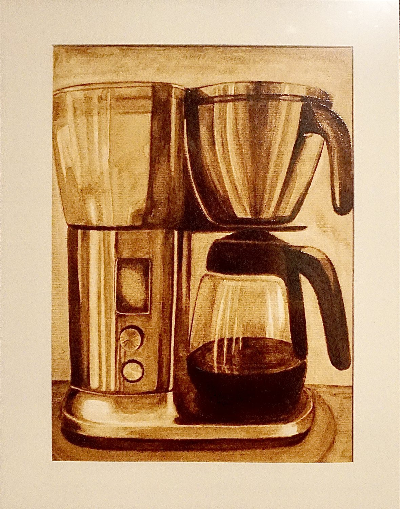

Original paintings, made with coffee
Cafe Studio
Look closer. This is the café as Hannah sees it, and below are the paintings she makes from it, in coffee.
-
The ritual
I soon found myself fully immersed in the rich culture, ritual, and community that revolves around the coffee lifestyle.
Hannah
-
The light
I harness the bold tones, natural warmth, and subtle textures of coffee to create monochromatic works that celebrate everyday moments and connection.
Hannah
-
The moment
A cup, a table, the light on the paper. Every café is full of paintings.
-
The medium
She paints them with the coffee itself.
The medium
One ingredient.
“I paint coffee-themed art using coffee. The bold, rich, and natural warmth of the medium translates onto paper to delight your senses.”
In a world chasing perfection, I have a deep appreciation for art that shows the human touch.
The palette
One coffee, every tone.
Weak coffee gives a pale golden wash. Strong coffee dries almost black. Every tone between comes from how much water goes into the brush, which is why the work is monochromatic.
-
The brush
Weak coffee first, for the palest golden wash.
-
Stroke by stroke
Stronger coffee goes on only once the last layer is dry.
-
The details
The darkest brew comes last, with the finest point.
The process
A painting, one layer at a time.
Keep scrolling and this painting comes back together the way it was made: light to dark, one dry layer over the last.
Animated from Hannah’s finished painting.
Finished. Now let’s hang it with the rest.
The collection
Six series, one medium.
Every piece is an original, painted by hand with coffee. Tap a painting to see it up close.
Step inside
Walk through the frames.
One painting after another, all the way in. Tap any of them to see it up close and ask about it.
Up close
The human touch.
At home
Where coffee art belongs.
Beside the grinder, above the espresso machine, next to the morning cup. Tap a photo to see the piece.
Frames in these photos are for staging and are not included.
The artist
From oil paint to coffee.

Collecting a piece
Good to know before you buy.
Ask Hannah
See something you love?
Ask about a piece or share an idea of your own. Tell Hannah which painting caught your eye and she will get back to you.